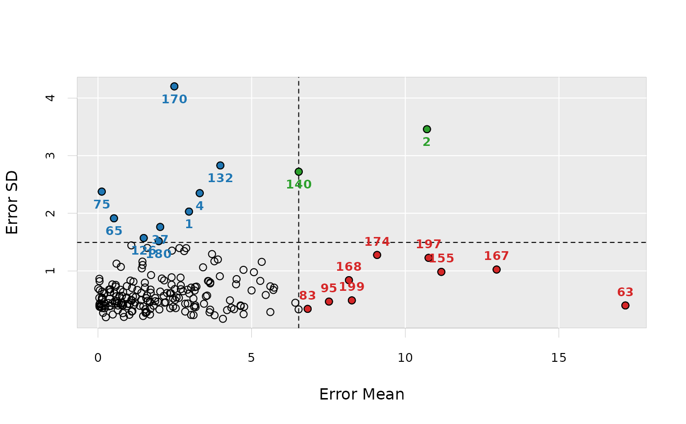
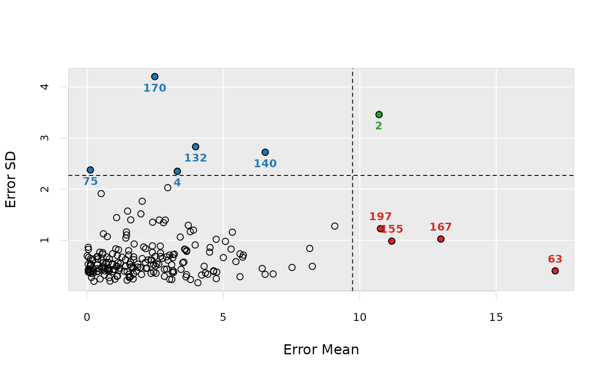

Outlier detection with ensemble partial least squares.
Usage
enpls.od(
x,
y,
maxcomp = NULL,
cvfolds = 5L,
reptimes = 500L,
method = c("mc", "boot"),
ratio = 0.8,
parallel = 1L
)Arguments
- x
Predictor matrix.
- y
Response vector.
- maxcomp
Maximum number of components included within each model. If not specified, will use the maximum number possible (considering cross-validation and special cases where n is smaller than p).
- cvfolds
Number of cross-validation folds used in each model for automatic parameter selection, default is
5.- reptimes
Number of models to build with Monte-Carlo resampling or bootstrapping.
- method
Resampling method.
"mc"(Monte-Carlo resampling) or"boot"(bootstrapping). Default is"mc".- ratio
Sampling ratio used when
method = "mc".- parallel
Integer. Number of CPU cores to use. Default is
1(not parallelized).
Value
A list containing four components:
error.mean- error mean for all samples (absolute value)error.median- error median for all sampleserror.sd- error sd for all samplespredict.error.matrix- the original prediction error matrix
Note
To maximize the probablity that each observation can
be selected in the test set (thus the prediction uncertainty
can be measured), please try setting a large reptimes.
Author
Nan Xiao <https://nanx.me>
Examples
data("alkanes")
x <- alkanes$x
y <- alkanes$y
set.seed(42)
od <- enpls.od(x, y, reptimes = 50)
print(od)
#> Outlier Detection by Ensemble Partial Least Squares
#> ---
#> Mean residual for each sample:
#> [1] 2.961290487 10.705505984 2.695084840 3.311091685 2.805275319
#> [6] 0.653303940 2.406471830 0.060138450 1.085301918 0.681639253
#> [11] 0.602668291 0.051825623 5.074258601 0.401223791 0.200469288
#> [16] 4.510123865 1.691529502 0.145738484 1.525737814 2.765037846
#> [21] 0.166203922 0.139797229 2.696201419 0.193069694 0.183589250
#> [26] 2.914078924 0.416333768 0.521945702 3.580281229 0.818709605
#> [31] 2.373884289 0.046727036 0.619399010 0.256234952 0.939652083
#> [36] 1.173721209 2.024661441 1.809535161 2.154042307 0.644501989
#> [41] 0.061133489 2.444588094 1.098370439 1.603545811 2.163023752
#> [46] 1.402565514 1.451659515 2.139296149 2.443892391 1.997895711
#> [51] 1.029372888 1.136841149 6.421380060 2.649873372 1.224674598
#> [56] 0.964921264 2.919868131 3.793601358 1.120247119 0.042588935
#> [61] 0.363153216 3.165008537 17.162269124 6.528451648 0.520605496
#> [66] 2.687075808 2.837691454 0.396424034 1.586470400 1.549832092
#> [71] 0.122850422 1.412340751 0.697607289 1.569135383 0.123461109
#> [76] 3.449456659 1.446110833 1.469166518 1.951656184 1.363008306
#> [81] 0.100632290 0.214244858 6.822557951 0.781231958 2.558088525
#> [86] 1.693194231 1.705163184 1.594881212 0.618256405 0.481129274
#> [91] 1.022913007 4.341302506 1.110030176 3.176739370 7.516301621
#> [96] 1.862482389 3.146321553 1.282671387 1.549270795 0.543544329
#> [101] 1.609953582 1.539486441 1.097285036 0.463297596 0.363243731
#> [106] 1.711660532 0.109005089 0.383383442 3.109554290 2.025583099
#> [111] 2.201838698 3.600461547 3.105103207 2.633412696 0.729670194
#> [116] 0.008296581 3.552415058 0.578271953 2.078384037 3.902482546
#> [121] 1.727881731 3.650065811 0.051772790 2.497201225 0.467536756
#> [126] 1.489009588 0.340541361 0.132148886 0.045135994 4.427647349
#> [131] 5.731789181 3.981627154 1.716354159 0.601427917 3.652150258
#> [136] 0.133532207 1.154975295 4.738600731 4.734765402 6.532606222
#> [141] 3.127767647 0.576464339 2.530101636 3.654622902 0.818384270
#> [146] 0.951243454 4.200623693 3.203804245 0.045774602 3.965457304
#> [151] 2.838265623 2.248011967 0.231138969 1.688400253 11.172263932
#> [156] 2.510655273 2.348956100 0.744693282 3.031595000 3.711339945
#> [161] 1.056457714 0.760364230 5.608100327 0.935520150 5.458962465
#> [166] 0.927523129 12.972029443 8.165533524 5.328551168 2.484859013
#> [171] 1.426435908 3.418963109 3.510966949 9.082680058 5.707308495
#> [176] 3.787580722 4.998185217 0.787402138 0.843890420 1.977324388
#> [181] 2.970935803 1.865369664 4.064825229 0.754344632 4.640244745
#> [186] 1.208198413 3.029808379 2.870715190 1.474642147 0.794823265
#> [191] 4.756522825 0.808924951 4.646357523 1.529725624 3.158674232
#> [196] 0.126320735 10.757378072 4.493208107 8.261099389 3.629763251
#> [201] 4.294356510 2.396207505 1.086055946 5.281273194 2.343797603
#> [206] 2.393339996 5.608819248
#> ---
#> Residual SD for each sample:
#> [1] 2.0295383 3.4591717 0.7499505 2.3497525 1.3438661 0.3988746 1.3521295
#> [8] 0.6652582 1.4428361 0.4479827 1.1262145 0.8221188 0.9776006 0.6809018
#> [15] 0.6082052 0.8580075 0.4563067 0.5095403 0.7951279 0.6467609 0.2721467
#> [22] 0.6421179 0.6828399 0.4560934 0.4037567 0.6743393 0.3928832 0.6132695
#> [29] 0.8256517 0.4056097 0.6128104 0.4178502 0.4754206 0.1959964 0.7369961
#> [36] 0.4117097 1.7630091 0.3959147 0.8356341 0.3178605 0.4366360 0.3783586
#> [43] 0.4867093 1.3986540 0.4482564 0.4912262 1.1030168 0.5667523 0.5239153
#> [50] 0.3305965 0.4215010 0.5583729 0.4475138 1.3956538 0.5452551 0.4287959
#> [57] 0.4345434 0.2303998 0.3009805 0.5306827 0.3846033 0.4022502 0.4005202
#> [64] 0.3321732 1.9126931 0.8840468 0.2943275 0.6316034 0.2845289 0.2691855
#> [71] 0.5016976 0.6198970 0.5633499 0.5270424 2.3760941 0.4301166 1.1617749
#> [78] 0.2173916 0.4655769 0.3940509 0.3757747 0.3497275 0.3408768 0.5654717
#> [85] 0.5408820 0.2431220 0.3395991 0.5735671 0.4370117 0.2435098 0.2388147
#> [92] 0.3611832 0.7032879 0.3711193 0.4676772 0.4741993 0.6589015 0.6691025
#> [99] 0.2896359 0.4720292 0.4810888 0.3346725 0.2942896 0.4406352 0.6772854
#> [106] 0.6753430 0.4242848 0.5187864 0.2329660 0.6413186 0.4552588 0.8210198
#> [113] 0.5212761 0.5316555 0.6732566 0.6948988 0.5722847 0.7572715 0.8682066
#> [120] 1.1984446 0.9276504 0.3272545 0.3763540 0.6842576 0.7662407 1.5708247
#> [127] 0.4425074 0.5372279 0.8630043 0.3355082 0.7097854 2.8301358 0.6207378
#> [134] 0.5604660 0.7827631 0.3548840 0.8135893 0.2485782 1.0185353 2.7216649
#> [141] 0.3765149 0.7282017 0.3539299 0.7998218 0.6350542 0.3872337 0.3196118
#> [148] 0.7272254 0.3906945 0.9074750 0.4313804 0.6164112 0.3909732 0.4712198
#> [155] 0.9828852 0.4958444 0.3522701 1.0701713 0.7098826 1.2925881 0.8318430
#> [162] 0.4494351 0.7327667 0.5391705 0.5821006 0.5230504 1.0236914 0.8394606
#> [169] 1.1569645 4.2022268 1.0436467 1.0621529 0.5589578 1.2767804 0.6687279
#> [176] 1.1668815 0.6607189 0.4421853 0.2008011 1.5162833 0.6090324 0.5296534
#> [183] 0.1686241 0.4156801 0.4007409 0.4526070 0.2362218 1.3948848 0.3850594
#> [190] 0.3991635 0.3768532 0.2678034 0.3900775 0.7123945 0.7198617 0.5281178
#> [197] 1.2265782 0.7673352 0.4887232 0.2826173 0.4897703 0.8893651 0.4974242
#> [204] 0.8264030 0.6131327 0.7606467 0.2861122
plot(od)

plot(od, criterion = "sd")
